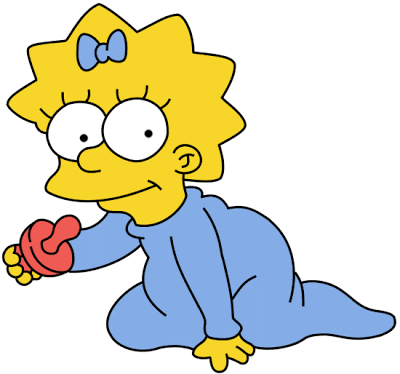

Maggie
Margaret "Maggie" J. Jojo Elizabeth Mackson Stevan Simpson é a filha mais nova de Homer e Marge.
Personalidade
São comuns as piadas onde Homer esquece o nome dela ou até mesmo de sua existência, não são muitos os episódios onde Maggie tem destaque, mas em alguns significativos episódios podemos perceber que ela é muito inteligente. Em 2012 Maggie ganhou seu curta metragem, The Longest Daycare que foi exibido antes de alguns filmes da Fox nos cinemas e chegou a concorrer ao Oscar de melhor curta metragem em Animação. E Maggie é conhecida por estar frequentemente chupando a sua a chupeta.